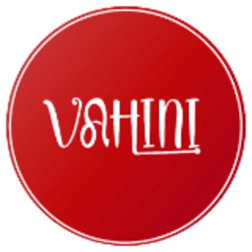
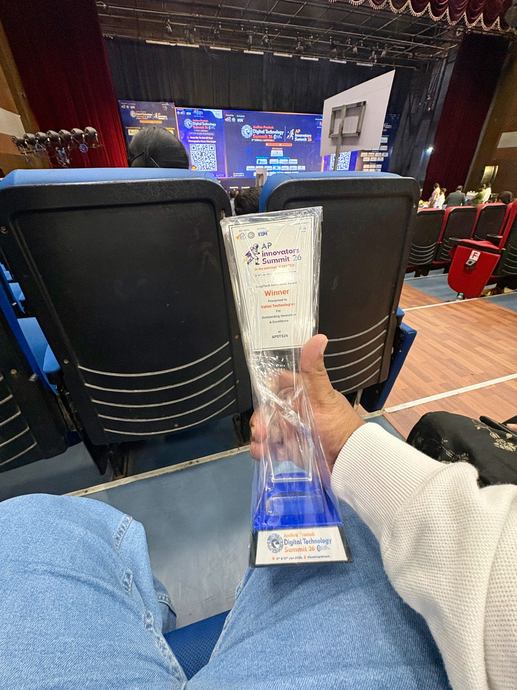
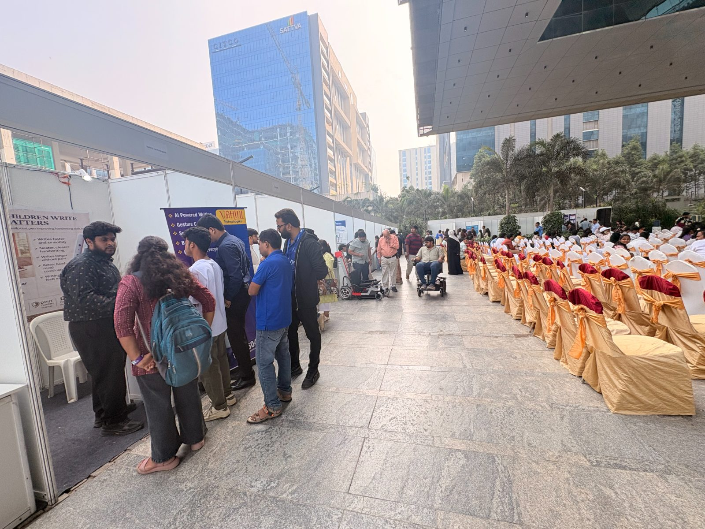
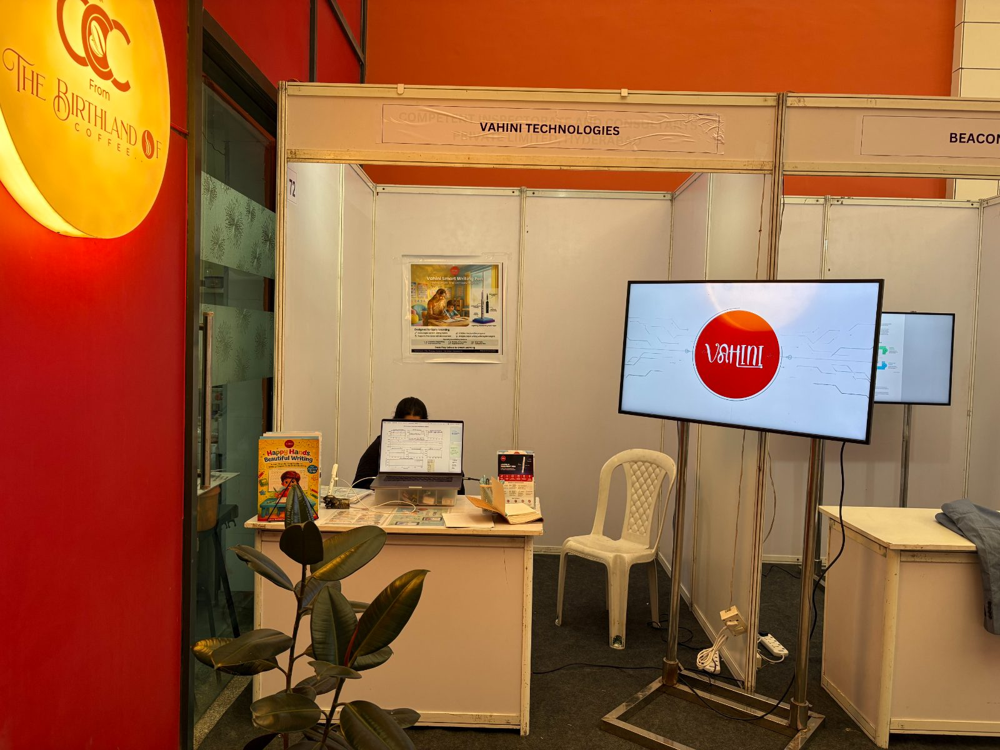
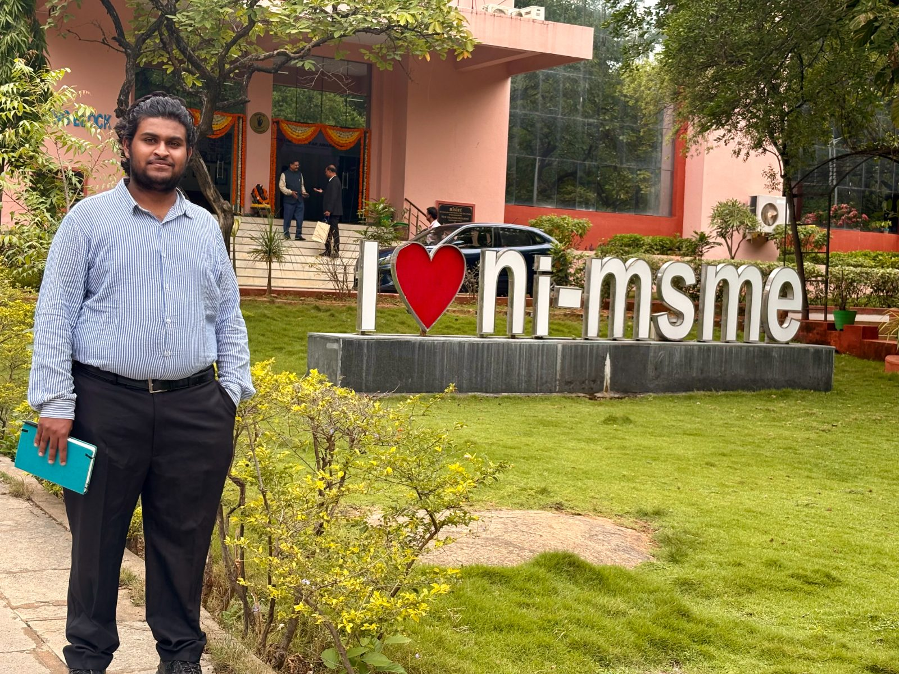

PITCH DECK · SEED · 2026
Vahini
Technologies
Every AI company is built on data. We are building the world's first multi-language handwriting-motion dataset — spanning six Indian scripts, collected from real human hands writing on ordinary paper.
The pen is how we collect it. The dataset is what we own.

Hyderabad, India · DPIIT-recognised · Patent No. 584433
01 · THE PROBLEM
Everyone reads handwriting.
No one records it.
No one records it.
THE HUMAN COST
Across the world, people of every age write by hand every single day — to learn, to work, to remember, to heal. That effort, and everything it reveals, is invisible to software.
THE ROOT CAUSE
Machines can read a finished page, but none can see how the hand moved to make it. The data linking movement, feedback and improvement simply does not exist.
THE OPENING
Build that dataset and the unsolvable turns routine: objective coaching, early screening, generative handwriting. Own it now — or watch it get built without us.
02 · WHY NOW
The window is open
Generative AI proved one thing for good: whoever owns the dataset owns the model. Every vertical is now racing for proprietary data — and a multi-language handwriting-motion corpus is the one still unclaimed.
TextCommonCrawl · Books
ImagesLAION · ImageNet
VoiceLibriSpeech · podcasts
Handwriting motion · multi-languageunclaimed
THE CATCH
There is no scrape for how a hand moves on paper.
It has to be collected — by us, now. In five years the handwriting-motion corpus will already belong to someone.
03 · WHAT WE'RE BUILDING
Three layers, one motion
1
The instrument
A smart pen that records exactly how the hand moves on ordinary paper.
2
The dataset ← the company
The world's first balanced, longitudinal motion corpus across Indian scripts.
3
The model
A handwriting foundation model that reads, verifies and generates human writing.

The pen is the instrument.
The dataset is the company.
The dataset is the company.
04 · HOW VAHINI WORKS
A pen that understands how you write
1
Write naturally
On ordinary paper. No tablet, no special notebook, nothing new to learn.
→
2
The pen captures motion
Invisible sensors record exactly how the hand moves, every stroke, in real time.
→
3
AI builds your Writing DNA
Motion becomes a personal signature of 20 factors, as distinct as a fingerprint.
→
4
Insight & action
The same motion powers coaching, note digitisation, screening and verification — for every writer, of any age, in any of six scripts.
Works on any paper · any script · for every age — screen-free, real-time
05 · WRITING DNA
A signature as distinct as a fingerprint
Every page produces a 20-factor signature — the raw material behind every Vahini application, and what no scanned image can ever capture.
Pressure
Slant
Spacing
Rhythm
Formation
Speed
Consistency
Grip force
Baseline
Alignment
Size control
Stroke order
Pen lifts
Loop control
Tremor
Fluency
Letter joins
Margins
Cadence
Steadiness
208 Hz
Handwriting changes in milliseconds — catches a tremor a camera never sees.
16 axes
Pressure, tilt, speed and rhythm — from one natural stroke, not a flat image.
any paper
No tablet, no dot-pattern, no app — the page you already use.
One signature, many applications →
Handwriting coaching
Digital notes
Screening & assessment
Signature intelligence
Developer SDK
06 · THE MOAT
Anyone could start. Almost no one will finish.
There is no shortcut. Every sample is written by a real human hand — page after page, person after person. A balanced, multi-language motion corpus is a slow, physical process that takes years to build.
smart pens
field teams
per-pen calibration
signed consent
thousands of writers
years of longitudinal tracking
THE MOAT IS TIME
Years of real hands,
page by page.
page by page.
We're already collecting. By the time anyone else begins, our corpus is years ahead — and a dataset built by hand cannot be rushed.
07 · COMPETITION
We own the column no one else fills
Others recognise finished writing. The real gap: motion, on paper, over years — and in six Indian scripts, not just Latin.
Player
Reads writing
Captures motion
Longitudinal
On paper
Scripts
Apple · Google · Samsung
recognise writing on glass
✓
~
✗
✗
many
STABILO OnHW
research IMU pen · lab-scale
✓
✓
✗
✓
Eng + Ger
NeoLAB · Livescribe
dot-pattern smart pens
✓
✗
✗
~
Latin
Vahini
motion on ordinary paper
✓
✓
✓
✓
6 Indian
08 · THE OPPORTUNITY
One dataset, many markets
Coaching is the wedge. The licensable motion corpus is the prize — a horizontal layer under edtech, health, identity and robotics.
✎
LIVEHandwriting AI
20-factor analysis & coaching, across six scripts.
⇩
IN DEVDigital Notes
Paper notes reconstructed to digital, screen-free.
✚
RESEARCHScreening & Assessment
Early motor-pattern signals, studied with clinicians.
✓
IN DEVSignature Intelligence
Verify how a signature was written, not just its shape.
{ }
PLANNEDDeveloper SDK
Motion intelligence as an API for partners.
09 · GO-TO-MARKET
Land soft, expand hard
1
Individuals, everywhere — a free analyser; anyone who writes builds demand and the contributor base.
2
Education — schools, tutors and learning centres adopt per-seat coaching.
3
Institutions & enterprise — clinics, banks and firms use screening, notes and verification.
4
Governments & regions — literacy and assessment programmes at population scale.
5
Dataset & SDK licensing — AI labs, health and fintech license the corpus and engine.
THE FLYWHEEL
More writers use the free analyser
↓
Each page adds balanced motion data
↓
A better model = better coaching
↓
Customers pay → funds collection
Distribution and the moat are the same motion.
10 · BUSINESS MODEL
Pilots fund the dataset
REVENUE ARRIVES IN SEQUENCE
TODAYlearners & educators
Pilot & coaching revenue
TOMORROWeducation & institutions
Coaching SaaS at scale
LATERbanks · health · AI labs
Dataset & SDK licensing
WHO PAYS FIRST
Learners and educators, today, for coaching. That revenue funds the dataset that later licenses to enterprises.
COST / LABELLED SAMPLE FALLS WITH VOLUME
₹15
phase 1
₹12
10× volume
₹9
50× volume
₹5
at scale
Figures illustrative.
11 · TRACTION
Small but real
★
DeepTech Innovation Award
Winner · AP Digital Technology Summit 2026, Visakhapatnam
✓
DPIIT-recognised startup
Recognised under Startup India · DIPP201621
§
Granted Indian patent
No. 584433 · dual-IMU sensing · 20-yr protection
✎
Live in the field
A 20-factor analyser running today · open pre-orders

DeepTech Award · Vizag

T-Hub, Hyderabad

IIT expo · booth #72

ni-msme, Hyderabad
12 · THE TEAM
Why this team
17 years in embedded systems, a granted patent, and three years living this problem — the rare team that can actually run a physical data-collection operation.
MK
Malli Kosuri
Co-Founder & MD · 17 yrs embedded systems; product vision & architecture
GK
Govardhani Kosuri
Co-Founder · sales, partnerships & pilot operations
VK
Vishnu Kosuri
Engineering Head · AI models, Vertex AI, QA & cloud
★
Specialists · NDA
Hardware, PCB & firmware freelancers
13 · THE ASK
Raising a
seed round
seed round
To grow the multi-language corpus, build the recognition model, and prove real-world traction with our first paying customers.
40% dataset & stipends
24% engineering & ML
14% hardware · 14% compute · 8% ops
BY MONTH 18 → WHAT SERIES A BUYS
✓5M motion strokes collected
✓100k labelled characters (Eng + Hindi)
✓Paying customers across education & enterprise
✓₹1 Cr ARR from pilots & seats
✓First dataset / SDK customer signed
All figures illustrative — replace with your targets.
14 · THE VISION
The pen is the instrument.
The dataset is the company.
The model is the future.
The dataset is the company.
The model is the future.
One motion signal, collected from real hands on ordinary paper, becomes the layer every machine uses to read, verify and generate human handwriting.
info@vahinitech.com·vahinitech.com·+91 98857 61007·Hyderabad, India
Vahini · pitch deck
{{ p.num }}
{{ pageLabel }}